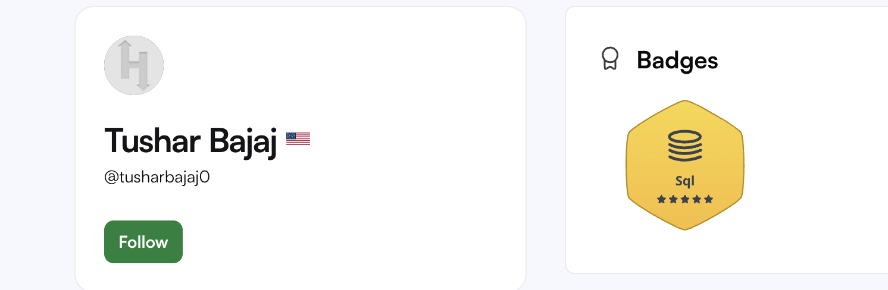
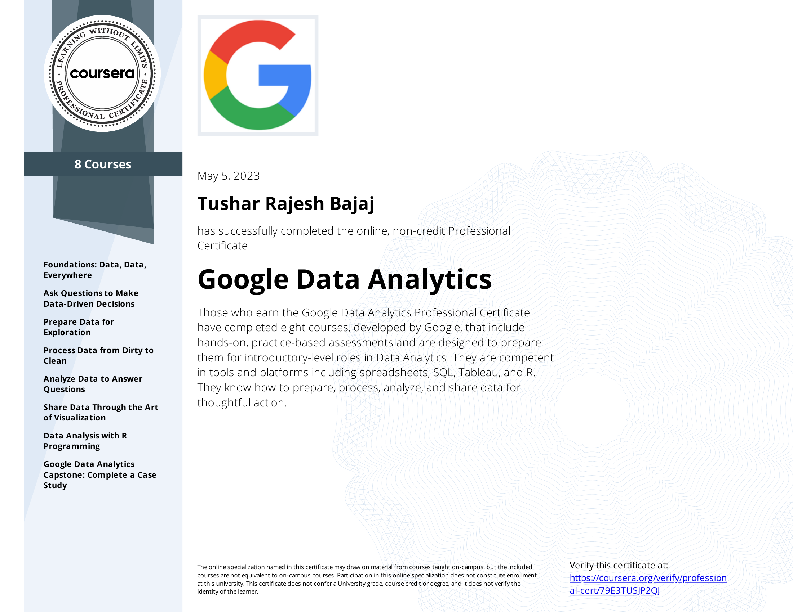
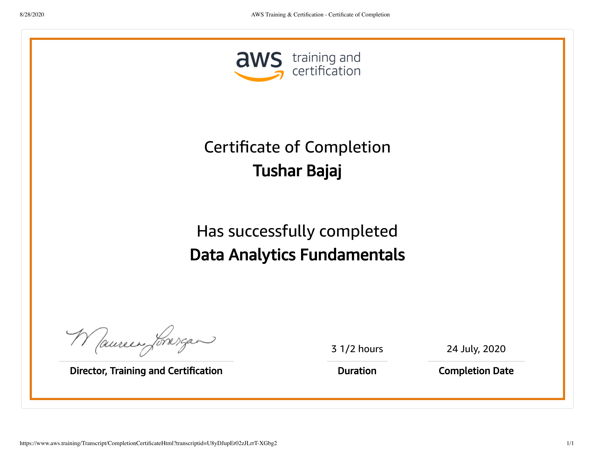
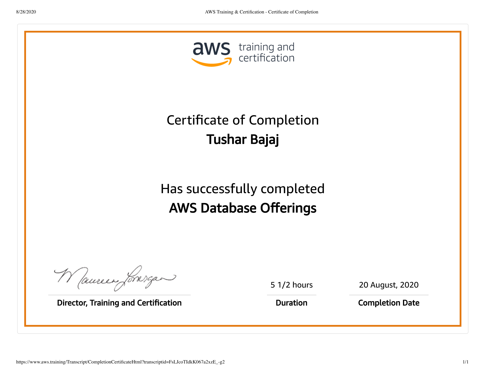

Certifications
🏅 HackerRank SQL (Gold Badge)
Demonstrated proficiency in advanced SQL concepts including joins, subqueries, ranking functions, and window operations through coding challenges and timed problem solving.

📊 Google Data Analytics Professional Certificate
Completed rigorous training covering data cleaning, analysis, and visualization using spreadsheets, SQL, R, and Tableau. Gained hands-on experience in real-world case studies.

📈 Microsoft Certified Data Analyst Associate
Validated skills in data modeling, transformation, and visualization using Power BI. Applied DAX expressions and Power Query to build business-driven insights.

☁️ AWS Data Analytics Certification
Certified in cloud-based analytics including data ingestion (Kinesis), transformation (Glue), and warehousing (Redshift). Learned to build scalable analytics pipelines.

🗄️ AWS Database Offerings
Completed AWS training on cloud-native and relational database offerings including RDS, Aurora, DynamoDB, and Redshift.
🧪 COVID Data Analysis using Python
Conducted end-to-end project analyzing global COVID-19 data using Python libraries like Pandas, Matplotlib, and Seaborn. Built time series plots and country-specific case comparisons.